Observation of the Glamuron
The approved cover and eleven figures, progressing from one discreet rhinestone to the full pageant finale.
These are illustrated reconstructions of the supplied visual briefs. Clean plotted references and provenance are included in the download; their data are synthetic, not new experimental measurements.
Approved cover
Approved cover
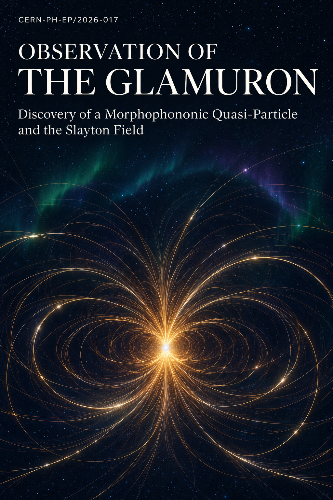
Figure 2.3 · Coherence threshold
Glamour 1 / 11
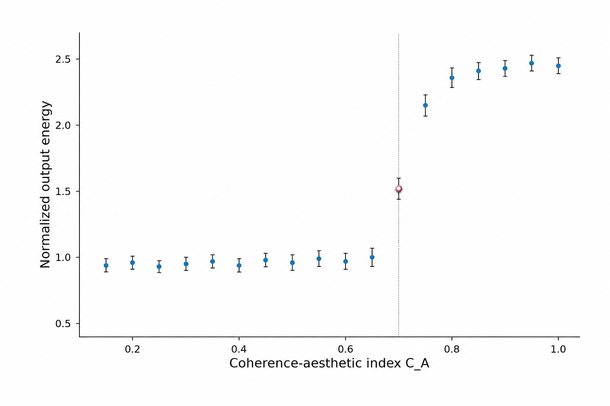
Figure 4.1 · Glamuron resonance spectrum
Glamour 2 / 11
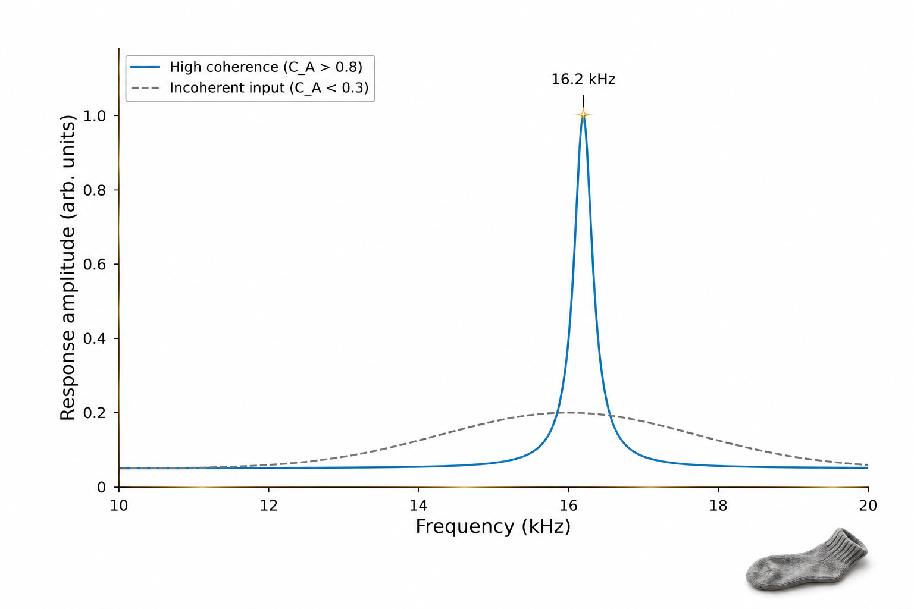
Figure 4.2 · Coherence validation and components
Glamour 3 / 11
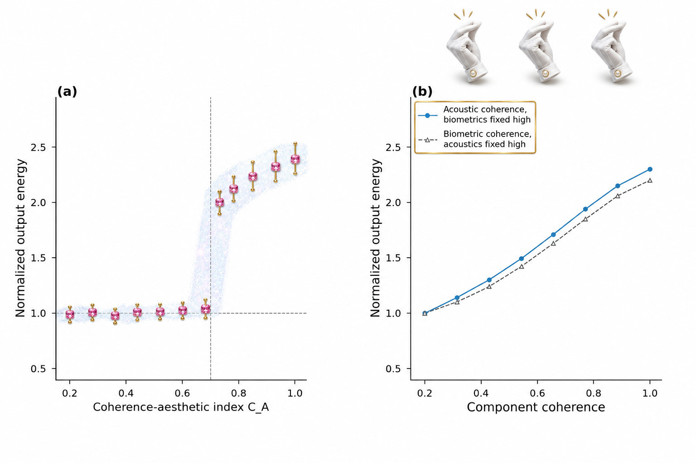
Figure 4.2-S · Spatial interference map
Glamour 4 / 11
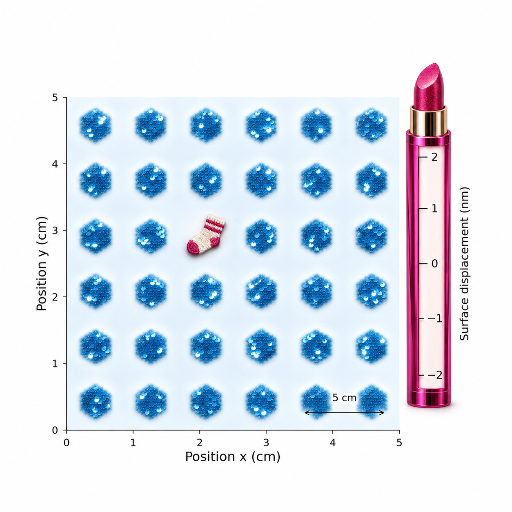
Figure 4.3 · Snap-sequence comparison
Glamour 5 / 11
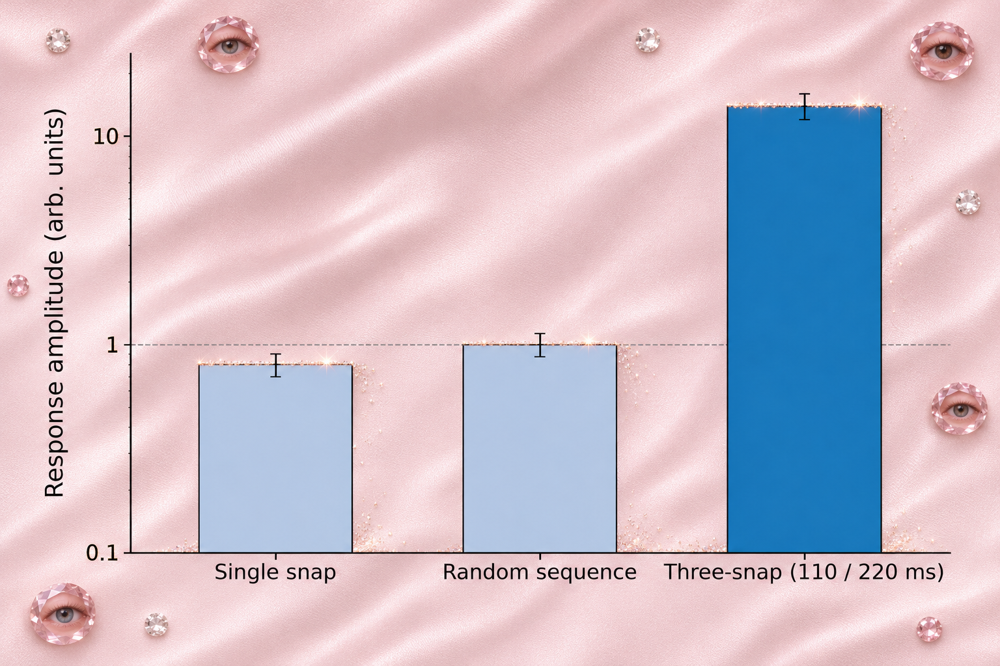
Figure 4.4 · Energy input and output
Glamour 6 / 11
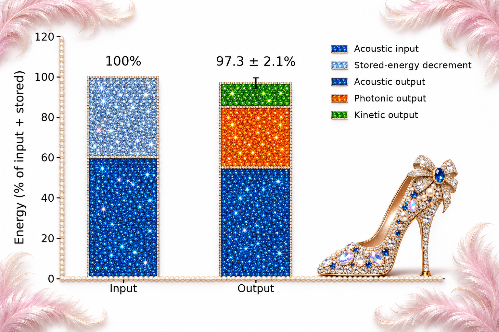
Figure 4.5 · Controlled splat decay
Glamour 7 / 11
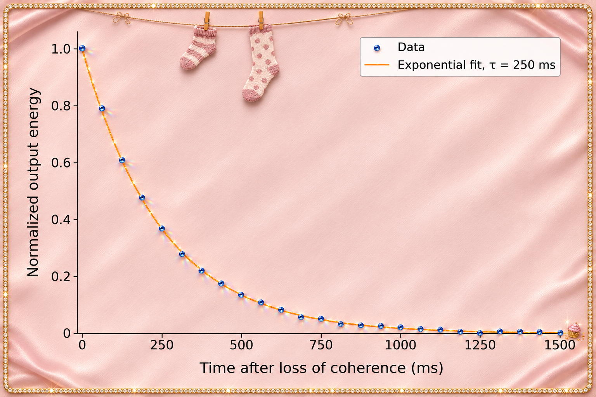
Figure A.1 · Activation spectrogram
Glamour 8 / 11
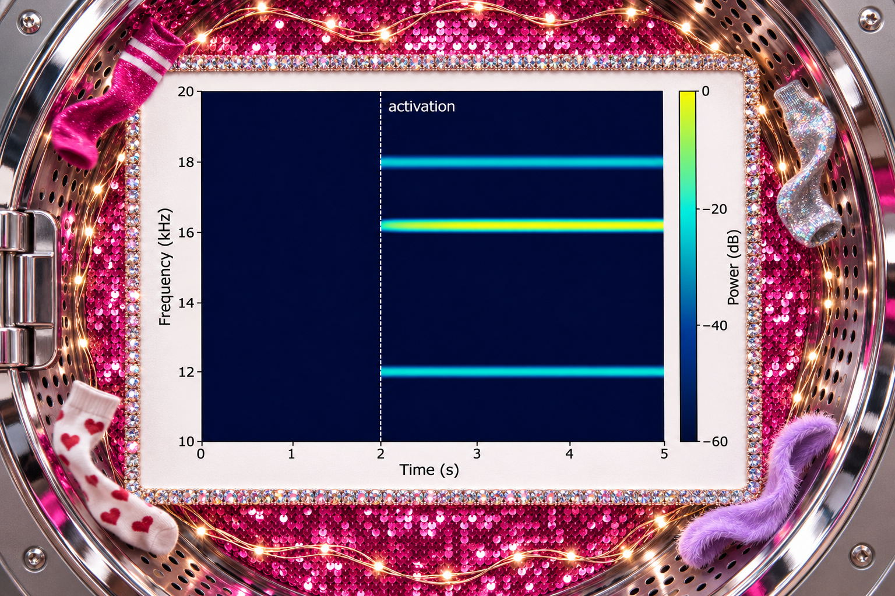
Figure A.2 · Biometric coherence time series
Glamour 9 / 11
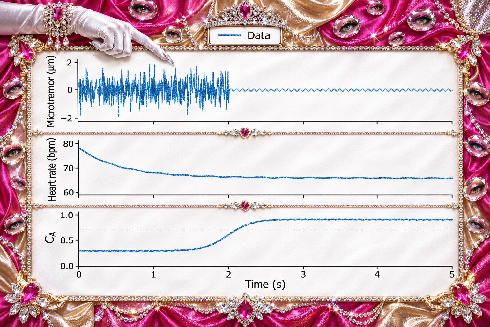
Figure A.3 · Three-snap timing
Glamour 10 / 11
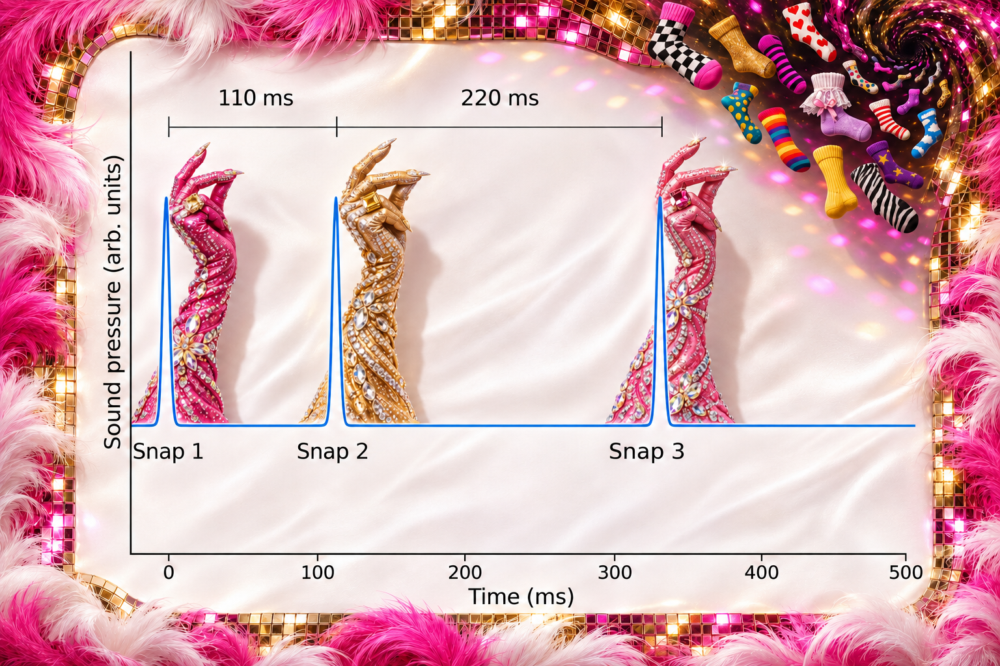
Figure A.4 · Semilogarithmic splat decay
Glamour 11 / 11
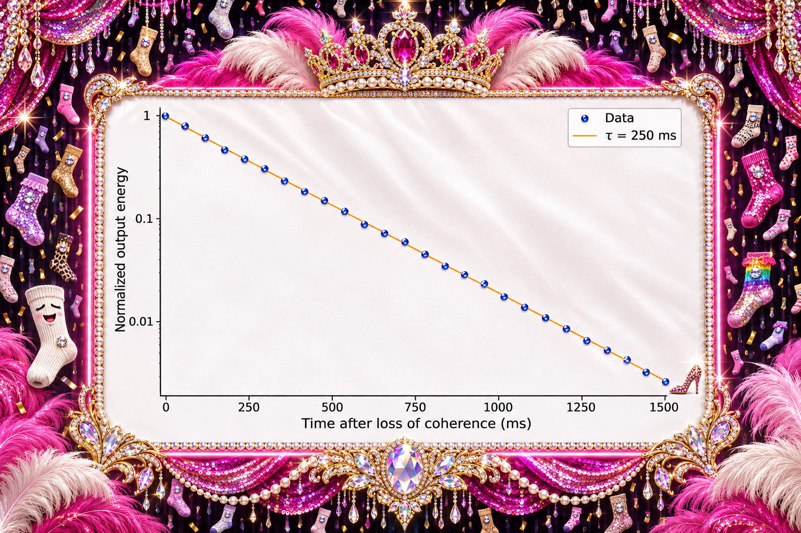